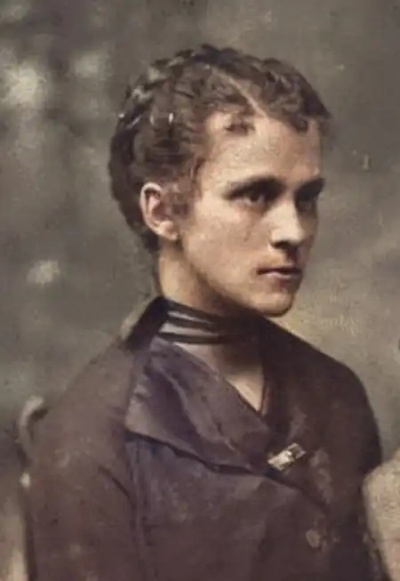

Іванна Блажкевич народилася 9 жовтня 1886 р. в с. Денисів, нині – Козівського району, в сім'ї вчителя. Майже не зазнала материнської ласки, бо вже на четвертому році життя втратила матір.
Училася спочатку в Денисівській початковій школі, потім у Тернопільській, так званій відділковій, школі. Потім екстерном здала екзамени у Львівській семінарії на вчительський диплом. Відтоді працювала народною вчителькою, вихователькою дитячих садків на Станіславщині (нині – Івано-Франківська область) і Тернопільщині.
Багато сил віддаючи боротьбі з неписьменністю в селах, вона не мирилася зі знущаннями панів із простого люду й гостро виступала проти неправди. Її вірші, оповідання, публіцистичні статті друкували прогресивні галицькі газети та журнали. Творча діяльність та громадська робота І. Блажкевич отримали глибоку підтримку О. Кобилянської, У. Кравченко, Т. Бордуляка, з якими письменниця була в дружніх стосунках. У 20-х роках XX століття І. Блажкевич почала писати для дітей. У видавництві "Світ дитини" вийшли одна за одною її книги п'єс, оповідань, віршів: "Св. Миколай в 1920 р." (1920), "Тарас у дяка" (1923), "Діло в честь Тараса", "Вертеп" (обидві – 1924), "Мила книжечка" (1928), "Пушистий король" (1929), "В мамин день" (1931), "Івась-характерник" (1936), "Оповідання" (1937) та ін. Після 1939 р. І. Блажкевич брала активну участь в організації Денисівської семирічної школи, дитячого садка, вчителювала, боролася за культурні перетворення на селі. Вона друкувалася в періодичній пресі, у літературних збірниках. Вийшли книжки І. Блажкевич "Подоляночка" (1958), "Прилетів лелека" (1971), "Чи є в світі щось світліше" (1977), "Прилетіла ластівка" (1986), "У дитячому садочку" (1993) та ін. Автор популярних статей з питань літератури, етнографії та ін. До останніх днів життя вона працювала на літературній ниві: писала мемуари про свої зустрічі з відомими письменниками минулого, нові вірші для дітей. Померла І. Блажкевич 2 березня 1976 р. в рідному селі Денисові. 1993 р. в Тернополі встановлено літературно-мистецьку премію ім. Іванни Блажкевич за кращі твори для дітей.